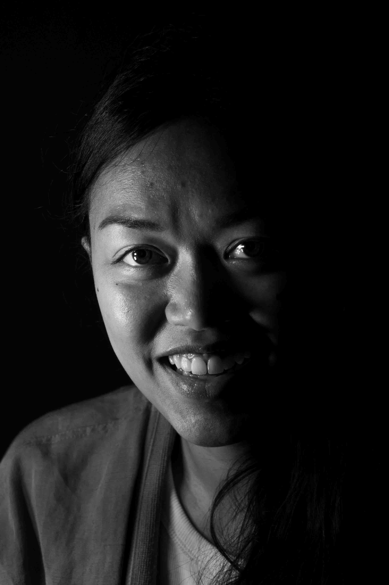

Listen to this page:
Aina is a science communicator with a speciality in sustainable lifestyles, and sustainable consumption and production.
"Frustrated"

She tells me that she is frustrated: “there is so much emphasis on more research, more projects, more solutions. We have solutions already, but we don’t want to pay attention. And we can’t think the solution is purely technological – it has to be about how we interact with the world – but there’s very little progress and emphasis on that.”
"Detached"

The detachment that she feels is partly out of despair, but also partly strategic: “it’s for my survival”, she explains. “People might think this is negative, like giving up, but it’s not. I don’t feel like science alone can provide the whole picture nor all the answers. But in my work we aren’t encouraged to look beyond the ‘hard facts’. Involving values and emotions is usually frowned upon in the research world. It makes the work a bit inhumane. So, I detach myself from work and find a way forward via culture and art, and connecting with other human beings. When you do that, you start thinking past yourself. That’s ultimately why we’re facing the problems we are.”
"Connected"

She goes on to explain that through detachment she finds new connections - with other people she might otherwise not meet: “You meet different people, different perspectives, different lived experiences – that’s where the creativity and positivity starts.”
“I do feel hope”, she tells me, “but not in the space that we work in. Some people find hope in research and solutions, but I don’t. I need to look further than technical solutions. It’s in other ways I feel hope – in seeing how culture can help us relate to each other better, and breed new ways to coexist beautifully. There I feel hope.”

Visit the project website